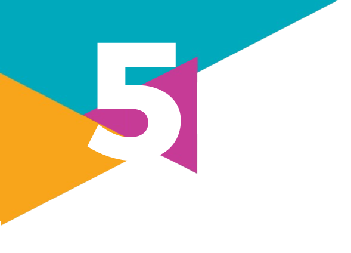
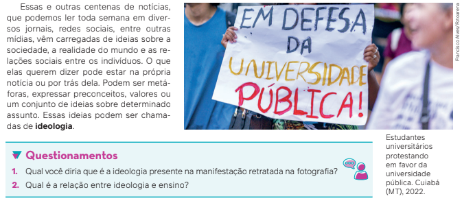
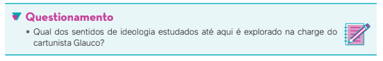
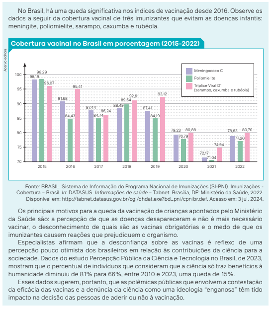

Ideologia e
A vida cotidiana é recheada de ideias, valores e concepções sobre determinados temas
e fatos, que orientam nossas atitudes e comportamentos. Leia a seguir um exemplo relatado
em uma reportagem publicada no início da década de 2020 durante a pandemia de covid-19.<
SANTANA, F. Conheça o universo dos médicos que chamam a vacina contra covid de “coisa de ideologia”.
Correio 24 horas, Salvador, 16 jan. 2021. Disponível em: https://www.correio24horas.com.br/entre/conheca-o-
universo-dos-medicos-que-chamam-a-vacina-contra-a-covid-de-coisa-de-ideologia-0121. Acesso: 4 jun. 2024.

O que dizem os teóricos sobre o conceito de ideologia?
A professora de Filosofia Marilena Chaui (1941-) assim define ideologia:
[...] é um conjunto lógico, sistemático e coerente de representações (ideias e valores) e
de normas ou regras (de conduta) que indicam e prescrevem aos membros da sociedade o
que devem pensar e como devem pensar, o que devem valorizar e como devem valorizar,
o que devem sentir e como devem sentir, o que devem fazer e como devem fazer. Ela é,
portanto, um corpo explicativo (representações) e prático (normas, regras, preceitos) de
caráter prescritivo, normativo, regulador [...].
CHAUI, M. O que é ideologia. São Paulo: Brasiliense, 2008. p. 108-109.
Além dessa, encontramos ao longo da história mais algumas definições de ideologia.
O conceito de ideologia foi, literalmente, inventado por um filósofo francês chamado
Destutt de Tracy (1754-1836), que escreveu, em 1801, o livro Elementos da ideologia. Segundo
esse filósofo, a ideologia seria o estudo científico das ideias, e as ideias são o resultado da
interação do indivíduo com seu meio ambiente.
Alguns anos depois, em 1812, Tracy e seus seguidores entraram em conflito com o imperador francês Napoleão Bonaparte, que os chamou de “ideólogos”, no sentido pejorativo da palavra, ou seja, pessoas que fazem devaneios da realidade e vivem especulando sobre o mundo. Como Napoleão era a pessoa mais importante na França, naquela época, esse sentido de ideologia ficou bastante popular.
Em 1846, Karl Marx (1818-1883) deu outro sentido ao
termo ideologia. Para ele – e Friedrich Engels (1820-1895),
com quem escreveu a respeito do tema –, falar em ideologia
significa se referir às “falsas representações” que as pessoas
apresentam sobre o mundo que as cerca. Para Marx e Engels,
a ideologia não é simplesmente uma ilusão, mas um reflexo
das condições materiais de existência, desempenhando um
papel crucial na manuntenção das relações sociais existentes.
São ideias (valores, sistemas, representações) provindas das
condições da relação de produção. Segundo Marx e Engels,
portanto, a ideologia adquire um sentido de instrumento de
dominação de uma classe social sobre outra ou de um grupo
social sobre outro.
Ao longo do tempo, a palavra foi mudando de sentido. Nos
anos 1920, outro significado surgiu para o termo, tendo como
base as reflexões do pensador italiano Antonio Gramsci (1891-
1937). Segundo ele, as ideologias têm o papel de organizar
o comportamento coletivo dos seres humanos, dando-lhes
direção, sentido, certa consciência dos seus interesses e do
lugar que ocupam na sociedade.
O conceito de ideologia significa, portanto, uma concepção
de mundo, manifestando-se implicitamente na Arte, no
Direito, na atividade econômica e em todas as manifestações
da vida. De acordo com Gramsci, tal conceito tem por função
conservar a unidade de toda a sociedade e dos grupos.
GLAUCO. Ideologia. In: GLAUCO. Abobrinhas da Brasilônia. São Paulo: Circo Editorial, 1985.

Hegemonia cultural e contra-hegemonia: a arte contemporânea indígena
O filósofo Antonio Gramsci foi responsável por desenvolver um conceito
importante relacionado ao de ideologia. Trata-se do conceito de hegemonia
cultural, que se refere a uma forma específica de dominação de uma classe
social sobre as outras.
A hegemonia, segundo Gramsci, não se exerce somente por meio da coerção e do uso da força, assim
como não se sustenta apenas pelo uso de recursos políticos e econômicos. A hegemonia cultural se
consolida e se torna mais estável quando busca o consentimento da sociedade civil por meio da disseminação da
ideologia, da cultura, dos valores e das concepções de mundo da classe dominante. Esses, por sua vez, são
difundidos como se representassem os interesses de todos os grupos sociais.
Gramsci, entretanto, sustenta que essa mesma estrutura “que esmaga o homem” e o torna passivo tem o
potencial de transformar-se em liberdade, um instrumento, segundo ele, para criar uma forma ético-política.
Embora o pensador marxista não tenha desenvolvido o conceito de contra-hegemonia, diversos autores
inspiraram-se em seus escritos para elaborar a noção de cultura contra-hegemônica, com intuito de se referir à
multiplicidade de resistências e lutas sociais que não apenas questionam a ordem social vigente, as
concepções de mundo, os valores culturais, políticos e econômicos, como também apontam a existência de outros
modos de vida e organização social.
Seguindo essas reflexões, os professores e pesquisadores, Paulo Thadeu Franco das Neves e Elemar
Kleber Favreto propõem um exercício: “ler” a arte indígena contemporânea como uma manifestação cultural
que produz um contraponto interessante ao discurso hegemônico. Para tanto, eles elaboram uma análise da
produção do artista plástico e escritor indígena da etnia macuxi Jaider Esbell (1979-2021).
As obras de Esbell estabelecem um diálogo com a Indústria Cultural, conceito que será estudado neste
capítulo, e utilizam suas ferramentas, meios de comunicação e redes sociais, ao mesmo tempo que são
profundamente críticas a esse sistema. Ao denunciarem a violência contra os povos indígenas, o desmatamento
das florestas, o apagamento da arte indígena nas enciclopédias de História da Arte, as obras de Esbell trazem
visibilidade a essas questões. Elas se comunicam com um público mais amplo e produzem, como defendem
os professores mencionados anteriormente, uma resposta à ideologia dominante.
NEVES, P. T. F. das; FAVRETO, E. K. A arte indígena contemporânea de Jaider Esbell e o seu contraponto à Indústria
Cultural. Ambiente: Gestão e Desenvolvimento, Boa Vista, v. 13, n. 1, p. 103-111, 2020. Disponível em:
https://periodicos.uerr.edu.br/index.php/ambiente/article/view/179. Acesso em: 4 jun. 2024.
Ainda na década de 1920, o sociólogo húngaro Karl Mannheim (1893-1947) apresentou um novo sentido para o
termo “ideologia”, com a obra Ideologia e utopia, publicada em 1929.
Mannheim fez, primeiro, uma distinção entre os termos ideologia e utopia. Ideologia seria um conjunto de concepções, ideias e teorias que orientam os indivíduos para estabilizar, legitimar ou reproduzir a ordem atual das
relações sociais, ou seja, todas as ideias, concepções ou teorias que têm caráter de conservação da realidade
social. Utopia seria o contrário: ideias, concepções ou teorias que aspiram à construção de outra realidade social,
que ainda não existe. Mannheim, contudo, apresenta outra classificação para o termo ideologia: a ideologia total e
a ideologia particular. Ideologia total seria o conjunto de formas de pensar, estilos de pensamento, pontos de vista
que representam interesses das sociedades em geral. Já a ideologia particular é a forma que se refere aos valores
e às crenças de indivíduos ou grupos específicos, ou, ainda, grupos de famílias.
Cultura e ideologia
Dois outros autores abordam a temática da ideologia: os alemães Theodor Adorno (1903-1969) e Max Horkheimer (1895-1973).
Esses autores vivenciaram um contexto histórico europeu e estadunidense singular, após
a Primeira Guerra Mundial, nos anos 1920. Naquele momento, estavam se formando sociedades
de massa com o nascimento de uma cultura de massa, em razão da difusão do rádio, da
indústria da música, do cinema e, em especial, do nascimento da indústria do entretenimento
estadunidense.
Adorno e Horkheimer partem do debate sobre ideologia e formulam, no final dos anos
1930, um novo conceito, denominado Indústria Cultural. Os autores são os expoentes de um
instituto de pesquisa social, fundado na Alemanha, em 1924, na Universidade de Frankfurt,
que ficou conhecido como Escola de Frankfurt.
Alguns anos depois da fundação do instituto, Horkheimer e Adorno se aprofundaram nos
estudos da cultura e dos fenômenos sociais e políticos. Começaram a questionar e aprofundar
a visão de Marx sobre ideologia, propondo duas ideias centrais:
• a cultura também condiciona as disposições e ações dos sujeitos;
• o capitalismo utiliza aparatos culturais para manter a ordem estabelecida, obtendo grande
sucesso nesse sentido ao longo do século XX.
Com a publicação do livro Dialética do esclarecimento, em 1944, Adorno e Horkheimer
afirmam que a ideologia dominante adquiriu um poder muito maior do que aquele que Marx
imaginou no século XIX, graças à criação da Indústria Cultural.
Segundo os autores, a indústria do entretenimento e os meios de comunicação de massa devem ser interpretados como um sistema de manutenção ideológica do capitalismo por meio de uma produção cultural dirigida e em escala ampliada. A utilização do termo “indústria” também está relacionada à exigência de um volume gigantesco de investimentos capitalistas, gerando lucros ainda mais significativos.
Fila para comprar ingressos em cinema. Guarulhos (SP), 2019.
A Indústria Cultural, segundo Adorno e Horkheimer, investe massivamente em mercadorias direcionadas ao consumo em larga escala, como as produções cinematográficas.
O filósofo brasileiro Leandro Konder (1936-2014) comenta com bastante propriedade as teses de Adorno e
Horkheimer, relacionando ideologia e Indústria Cultural:
"A indústria cultural conferiu poderes avassaladores à capacidade que a ideologia dominante possui de in-
duzir o pensamento, a atenção e mesmo o olhar, a percepção, para os pontos por ela iluminados. A indústria
cultural possibilitou, no século XX, a criação e o funcionamento das sociedades totalmente administradas,
que já não precisam se empenhar em justificar suas prescrições e imposições: a massa dos consumidores
tende a aceitá-las passivamente, considerando-as normais, legitimadas pelo simples fato de existirem."
KONDER, L. A questão da ideologia. São Paulo: Companhia das Letras, 2002. p. 84.
Esse debate gerou uma ampla reflexão entre sociólogos e outros intelectuais sobre as definições de cultura de
massa e meios de comunicação de massa, dentro e fora da Escola de Frankfurt. Tais definições foram utilizadas
para se referir ao fato de que a cultura, em suas manifestações, passou a ser produzida na sociedade ocidental de
forma padronizada, sendo consumida comercial e massivamente.
O professor canadense Marshall McLuhan (1911-1980) definiu o fenômeno da comunicação de massa com a
seguinte frase: “O meio é a mensagem”. Assim, mais importante do que a análise do conteúdo de uma mensagem
é a análise do seu veículo. Ele conclui, daí, que o mesmo conteúdo exposto em um livro, gibi ou transmitido em uma
rádio ou em programas televisivos teria efeitos diferentes. Assim, o meio pelo qual recebemos as informações – as
mensagens – influencia a percepção e a compreensão que temos delas.
McLuhan identifica três etapas no desenvolvimento dos canais de comunicação:
1. A civilização oral, por meio da palavra falada e de gestos.
2. O surgimento da escrita e de sua explosão no século XVI, com a invenção da imprensa, que McLuhan denominou
Galáxia de Gutenberg.
3. O surgimento dos meios de comunicação de massa, como o rádio, o cinema e a TV, que McLuhan chamou de
Galáxia de Marconi.
McLuhan escreveu principalmente entre a década de 1960 e o início dos anos 1970. Ele foi um dos primeiros a
afirmar que a mídia eletrônica estava transformando a vida em uma aldeia global: as pessoas espalhadas pelo mundo
acompanhavam os acontecimentos em tempo real – de certa forma, participando desses acontecimentos. Essa
observação de McLuhan, com o passar dos anos, tornou-se perceptível para um número cada vez maior de pessoas.
(1929-), que também foi integrante da Escola de Frankfurt. Habermas falava que a Indústria Cultural transformou a
discussão dos interesses públicos – que ele chamava de esfera pública –, como a política e a democracia, em
interesses comerciais que beneficiam os interesses privados. Para Habermas, as discussões políticas são encenadas
nos parlamentos e na mídia, e os reais interesses públicos são manipulados e controlados pela mídia.
O alemão Walter Benjamin (1892-1940) também fez uma reflexão
importante sobre cultura
de massa, Indústria Cultural e ideologia. Benjamin
afirmava que, no momento em que os produtos
culturais criados pelos indivíduos foram submetidos à
ideia de consumo, eles foram transformados
em mercadorias e passaram a ser fabricados
em série – ou, seguindo a lógica do mercado,
valorizados como bens de luxo, de alto custo e
de difícil acesso. Isso vale, por exemplo, para as
obras de arte: algumas exposições se transformam
em grandes eventos turísticos, às vezes
viajando o mundo e se deslocando entre diversos
museus ou sendo expostas em praças públicas.
Walter Benjamin, assim, diz que a Indústria Cultural
massifica a cultura e as artes para o consumo
rápido no mercado da moda e na mídia.
Produtos à venda com a
imagem da obra Monalisa.
Paris, França, 2018.
A reprodução da obra Monalisa em
diversos produtos é um exemplo
da lógica de consumo da cultura de
massa, analisada por Benjamin.
A filósofa Marilena Chaui complementa a discussão de Benjamin. Para ela, a Indústria Cultural existe para
vender cultura e, para isso, deve agradar e seduzir o consumidor. Essa indústria não pode provocar, chocar, perturbar
ou fazer o consumidor pensar nas informações novas. Segundo Chaui, o que a Indústria Cultural deve fazer para ser
eficiente é oferecer ao consumidor coisas e ideias já conhecidas, mas com novas aparências.
O francês Jean Baudrillard (1929-2007) também teorizou sobre a mídia de massas. Para ele, o impacto das
mídias no mundo contemporâneo produz um impacto na vida das pessoas muito mais profundo do que qualquer
outra tecnologia. A televisão, por exemplo, não serviria somente para representar o mundo, mas também para
definir como é este mundo em que vivemos. Baudrillard diz ainda que não existe apenas uma realidade, e sim uma
hiper-realidade , ou seja, um mundo de simulacros (representações enganosas), em que o importante são as
imagens de um fato, que podem não significar o fato realmente ocorrido. É uma ideia muito parecida com a de Marshall
McLuhan (de que o meio é a mensagem).
Estudaremos em capítulos adiante, com mais profundidade, os impactos sociais das mídias, das redes sociais e
do chamado mundo virtual no século XXI. Certamente, o conceito de ideologia retornará ao debate.
Ideologia e controvérsias públicas
Nos últimos anos, o termo ideologia passou a figurar em uma série de polêmicas que tomaram
conta do debate público no Brasil. O caso que vimos na abertura deste capítulo, em que
a vacinação contra a covid-19 foi considerada uma questão ideológica, é um exemplo disso.
A acusação de que vacinar a população contra o coronavírus seria uma medida ideológica
está relacionada com, pelo menos, dois aspectos. O primeiro deles diz respeito a oposições
político-partidárias que têm se intensificado na sociedade brasileira nos últimos anos. Nessa
polêmica específica, os defensores da vacinação urgente e universal da população foram
acusados de estar sendo movidos por um posicionamento político-partidário de oposição ao
governo que dirigia o país durante a pandemia de covid, entre 2020 e 2022. Nesse caso, o
termo ideologia assumiu um sentido de posicionamento político-partidário: os defensores da
vacinação estariam orientados por uma ideologia política específica e, por isso, se posicionariam
de forma contrária às medidas do governo da época.
Existe, ainda, um segundo sentido atribuído ao termo ideologia nessa polêmica: aquele que
se refere à ideia de “engano”, “compreensão falsa da realidade” ou “mistificação”. Os médicos
mencionados na abertura deste capítulo sugeriram que os defensores da vacinação estariam
sendo enganados por falsas evidências científicas, ou que estariam sendo manipulados a
acreditar nos efeitos benéficos da vacinação.
ITO, C. ["Ideologia"]. In: TERMOS ambíguos do debate político atual: pequeno dicionário que você não sabia que existia. Coordenação: Sonia Corrêa. Ilustração: Carol Ito. Rio de Janeiro: Associação Brasileira Interdisciplinar de Aids - ABIA, 2022. p. 8. Disponível em: https:// sxpolitics.org/pequenodicionario/uploads/ Pequeno%20Dicion%C3%A1rio%20Jovem.pdf. Acesso em: 4 set. 2024.


Outro caso emblemático envolvendo o termo “ideologia” é aquele relacionado com o
crescimento das discussões sobre identidade de gênero e direitos das pessoas LGBTQIAPN+ na
sociedade brasileira. Estudaremos esses temas com mais profundidade em outros capítulos.
Por ora, cabe mencionar que, à medida que os movimentos feministas e LGBTQIAPN+ foram
ganhando espaço nas ruas e nas redes sociais e passaram a ter alguns direitos e reivindicações
garantidos, alguns grupos sociais começaram a classificar essas lutas como “ideológicas”,
“perigosas” e contrárias às suas crenças.
Nesses debates, a afirmação de que a identidade de gênero dos seres humanos não
necessariamente corresponde ao sexo biológico designado ao nascer – masculino ou feminino
– tem sido denunciada como uma “ideologia de gênero”. Aqueles que defendem a existência
de identidades de gênero diversas são frequentemente acusados de estar promovendo uma
ideologia. O termo “ideologia”, nesse caso, vem associado à ideia de que essas pessoas estariam
promovendo um discurso falso, contrário à ordem natural e até à ordem divina dos seres
humanos.
Em todos esses debates – seja sobre vacinação, seja sobre gênero –, percebemos que o
termo “ideologia” assume uma série de sentidos. O que parece ser comum a todas essas
controvérsias é que ideologia passa a ser uma categoria de acusação. Apenas o posicionamento
daqueles que são acusados seria ideológico; o posicionamento daqueles que denunciam, por
sua vez, seria supostamente “neutro”, “verdadeiro”, “natural”, “não ideológico”.
ITO, C. [“Ideologia de gênero”]. In: TERMOS
ambíguos do debate político atual: pequeno
dicionário que você não sabia que existia.
Coordenação: Sonia Corrêa. Ilustração: Carol
Ito. Rio de Janeiro: Associação Brasileira
Interdisciplinar de Aids - ABIA, 2022. p.
20. Disponível em: https://sxpolitics.org/
pequenodicionario/uploads/Pequeno%20
Dicion%C3%A1rio%20Jovem.pdf.
Acesso em: 4 set. 2024.
Como estudamos até aqui, alguns
autores definiram ideologia como
visões de mundo que orientam
as formas como observamos e
interpretamos a realidade que nos
cerca e como nos posicionamos
diante dela. Desse modo, todos
estaríamos orientados por ideologias.
E na escola, há ideologia?
Como vimos anteriormente, as polêmicas acerca do conceito de ideologia atravessam
vários ambientes públicos, seja na área específica da saúde, seja nas relações familiares. Outro
espaço público também permeado de debates e controvérsias é a escola.
No âmbito escolar, existem pensamentos e sentimentos que, sem percebermos, podem
ser caracterizados como ideológicos. Eles podem ser expressos por professores, diretores e
funcionários, assim como por estudantes e seus responsáveis.
Pensamentos e frases como os seguintes podem ser recorrentes no cotidiano da escola:
“A função do professor é ensinar, e a do estudante é aprender.”
“Professor não pode falar de política em sala de aula.”
“A escola dá oportunidades a todos os estudantes de aprenderem as coisas da vida.”
Essas frases expressam pensamentos e ideias disseminados não só na escola, mas em
toda a sociedade. Elas prescrevem normas, representam uma dada concepção da realidade e
generalizam o particular, além de inverter, naturalizar e ocultar determinados fatos. Prescrever
normas é elaborar, repetir e manter a ordem “normal” das coisas. Por isso, dizer que “a
função do professor é ensinar, e a do estudante é aprender” pode ignorar que o docente, além
de ensinar os conteúdos de determinado componente curricular, sempre transmite, no seu
comportamento em sala de aula, uma maneira de enxergar e se posicionar no mundo. Por esse
motivo, ele sempre “faz política” quando se nega a participar de uma greve da sua categoria
ou, de forma contrária, quando entende e apoia o sindicato como a instituição responsável por
representá-lo nas reivindicações coletivas por melhores condições de trabalho.
Da mesma forma, o estudante também tem o
direito de lutar por melhores condições para o seu
aprendizado na escola, pois, assim como o professor, ele pode falar e fazer política.
O último pensamento, “a escola dá oportunidades
a todos os estudantes de aprenderem as coisas da
vida”, pode ocultar o fato de que a escola pode contribuir para a reprodução das desigualdades sociais.
Estudantes com condições diversas de acesso à cultura, ao lazer e aos meios de comunicação
tendem a obter mais informações e maior formação
fora da escola e um desempenho melhor nas aulas.
Por exemplo, se um estudante tem como recurso extraclasse apenas a televisão, enquanto outro tem a
oportunidade de frequentar museus, bibliotecas, teatros, viajar para diversos lugares, entre outras ações
pedagógicas e culturais extraclasse, é possível que
este assimile melhor do que o primeiro os conteúdos das aulas dos demais
componentes curriculares,
desde Arte até Biologia, por exemplo. Assim, quando a instituição escolar
trata todos igualmente
– usando um padrão de linguagem e ensino que tende a atender melhor quem tem mais acesso aos diversos bens culturais –, ela acaba por reproduzir ainda mais o aprofundamento das
desigualdades.
Família em visita a exposição em um museu. Rio de Janeiro (RJ), 2023.
A reflexão apresentada no parágrafo anterior é uma das conclusões de um importante
sociólogo que se dedicou, entre outros temas, a estudar a educação na sociedade capitalista.
O francês Pierre Bourdieu (1930-2002) elaborou o conceito de capital cultural para explicar
a desigualdade de desempenho entre os estudantes, de acordo com a sua classe social de
origem. Bourdieu, em parceria com o sociólogo Jean-Claude Passeron (1930-), escreveu, em
1970, uma obra que se tornou referência nos estudos da Sociologia sobre a educação, intitulada
A reprodução: elementos para uma teoria do sistema de ensino.
Nela, Bourdieu e Passeron, ao analisarem o sistema educacional francês, demonstraram
sociologicamente o papel assumido pela escola no sentido de reproduzir ideologicamente as
desigualdades sociais. A ideologia, portando, apesar de estar sempre presente no cotidiano
escolar, não é necessariamente percebida dessa forma por todas as pessoas.
O debate político no contexto escolar
Vamos investigar outro exemplo de debate que ocorre fora da escola, mas que está relacio-
nado aos debates em torno da ideologia e da educação de crianças e jovens. Trata-se de um
movimento político surgido nos últimos anos no Brasil, denominado Escola sem Partido.
Em uma palestra realizada no Congresso Conservador em Curitiba (PR), em 2015, os
idealizadores desse movimento afirmaram que o professor não pode se posicionar politicamente, pois
isso violaria a liberdade de consciência dos estudantes, que seriam uma audiência cativa, uma
vez que não podem sair da sala de aula. Outro lema desse movimento é que “professor não é
educador” – o papel do professor é somente o de tirar dúvidas.
Os defensores do Escola sem Partido reivindicam a existência de certa “neutralidade”
de pensamento, atacam “o abuso da liberdade de ensinar” e investem na denúncia de
conteúdos das Ciências Humanas (Filosofia, Geografia, História e Sociologia) que são
ensinados, segundo eles, de acordo com critérios “doutrinários”, optando pela perspectiva
da “luta de classes”.
Em vários sites e em canais no YouTube, o movimento Escola sem Partido divulga
artigos e vídeos que expressam o conservadorismo e a defesa da neutralidade. Outra
preocupação deles é defender um conceito de família único e de sexualidade vinculada à
heteronormatividade, não admitindo o debate sobre sexualidades, identidades de gênero
e orientações sexuais diversas na escola.
O movimento já tentou várias vezes aprovar leis em diversos estados do Brasil e até no
Congresso Nacional, mas não obteve o êxito que desejava. Ele acusa professores de serem
ideológicos, porém defende certas ideias como imutáveis e se afirma como não ideológico.
Ideologia, para o movimento Escola sem Partido, é ser de “esquerda” ou “comunista”.